S33 — Noise-Cancelling Headphones शोर गायब कैसे करते हैं?
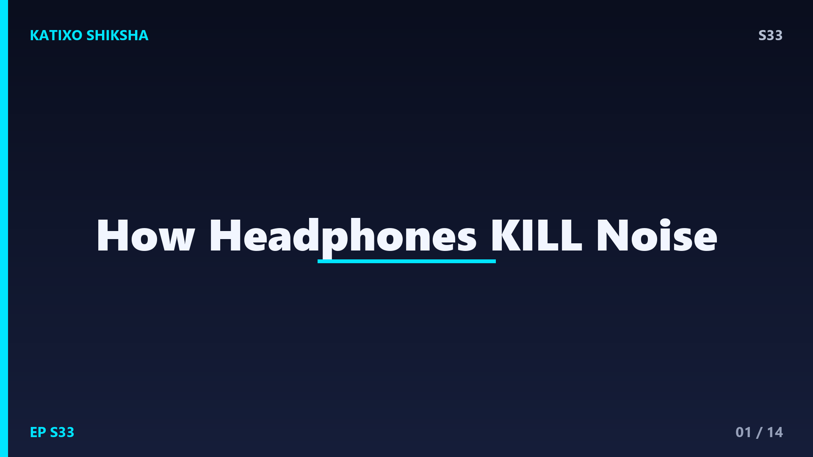
Slide 1दोस्तों, कल्पना करो — तुम भीड़भाड़ वाली बस या plane में बैठे हो, चारों तरफ़ शोर ही शोर। तुम headphones पहनते हो, एक button दबाते हो, और अचानक... सब कुछ शांत! जैसे किसी ने दुनिया का mute button दबा दिया हो। बिना तेज़ music चलाए बाहर का शोर गायब! ये कोई magic नहीं, बल्कि बहुत ही clever physics है। आज Katixo Shiksha पर हम खोलेंगे noise-cancelling headphones का राज़ — कैसे आवाज़ से ही आवाज़ को मारा जाता है। चलो शुरू करें!
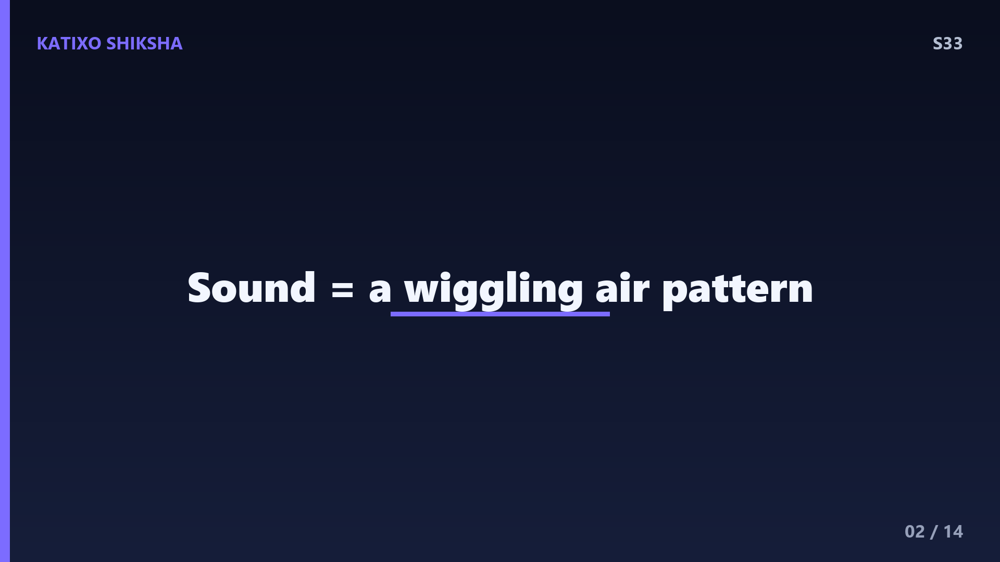
Slide 2पहले समझो आवाज़ होती क्या है। आवाज़ असल में हवा में चलती हुई एक wave है — हवा के कण आगे-पीछे हिलते हैं और बनाते हैं ऊँचे और नीचे का pattern, जिन्हें कहते हैं crests और troughs, यानी चोटियाँ और घाटियाँ। ये wave तुम्हारे कान के पर्दे को हिलाती है और तुम्हें sound सुनाई देता है। तो आवाज़ कोई ठोस चीज़ नहीं, बस हवा का एक हिलता हुआ pattern है। और यहीं छुपी है noise cancelling की पूरी trick — pattern को पकड़ो, और उसे उल्टा कर दो।
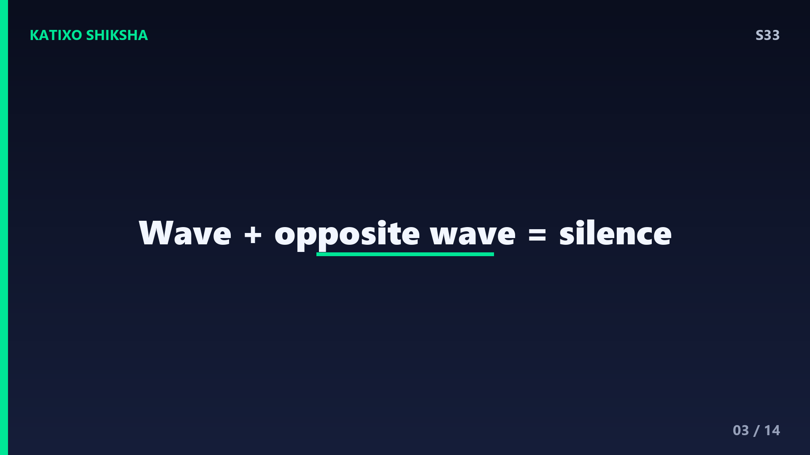
Slide 3अब असली कमाल — एक खूबसूरत नियम जिसे कहते हैं destructive interference. सोचो दो आवाज़ की waves हैं। अगर एक wave की चोटी ठीक दूसरी wave की घाटी पर आ जाए, तो दोनों एक-दूसरे को काट देती हैं — और नतीजा होता है... खामोशी! एक wave ऊपर धकेलती है, दूसरी ठीक उतना ही नीचे खींचती है, दोनों cancel। इसे कहते हैं anti-phase, यानी बिल्कुल उल्टी wave. बस यही है noise cancelling का दिल — शोर के खिलाफ़ उसी का उल्टा version बना देना।
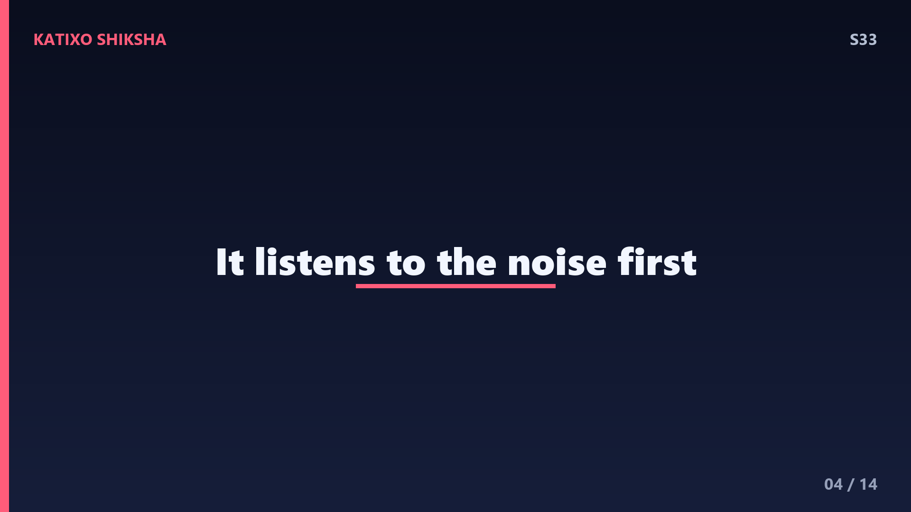
Slide 4अब देखो headphone इसे कैसे करता है। हर noise-cancelling headphone में लगे होते हैं छोटे-छोटे microphones. इनका काम है आसपास का शोर लगातार सुनते रहना — bus का गड़गड़, AC की भनभन, लोगों की बातें। ये microphone उस शोर की wave को पकड़ते हैं और भेज देते हैं एक छोटे computer chip को, जिसे कहते हैं processor. यही चालाक processor है जो शोर को analyze करता है और तय करता है कि उसे cancel करने के लिए ठीक उल्टी wave कैसी होनी चाहिए। एकदम एक jasoos की तरह!
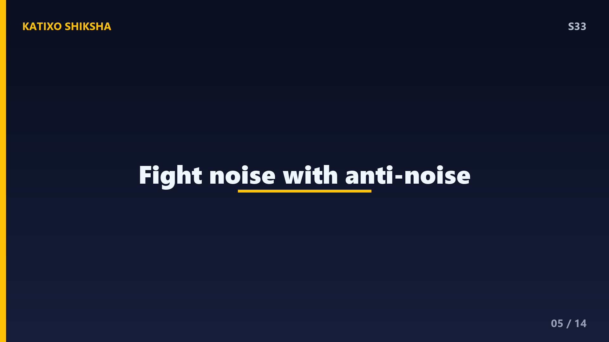
Slide 5अब चौथाई-second में चमत्कार होता है। processor उस शोर की बिल्कुल उल्टी wave बनाता है — anti-noise — और headphone के speaker से तुम्हारे कान में भेज देता है। बाहर का शोर और ये anti-noise जब मिलते हैं, तो destructive interference से एक-दूसरे को काट देते हैं। नतीजा — शोर लगभग गायब! और ये सब इतनी तेज़ी से होता है कि तुम्हें पता भी नहीं चलता। इसी पूरी technique को कहते हैं Active Noise Cancellation, यानी ANC. यही वो शब्द है जो headphone की डिब्बी पर बड़ा-बड़ा लिखा होता है।
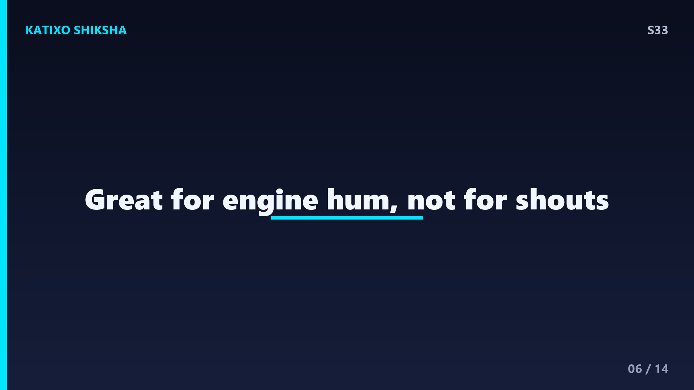
Slide 6अब एक interesting मोड़। ANC हर तरह के शोर पर एक जैसा काम नहीं करता। ये सबसे बढ़िया काम करता है low-frequency यानी कम सुर वाली लगातार आवाज़ों पर — जैसे plane के engine की भारी गूँज, AC की hum, या train की घरघराहट। क्योंकि इन waves का pattern धीमा और predictable होता है, processor इन्हें आसानी से पकड़कर उल्टा कर लेता है। लेकिन अचानक आने वाली तेज़ आवाज़ें — जैसे किसी का चिल्लाना या ताली — बहुत fast और random होती हैं, इसलिए ANC उन्हें पूरी तरह नहीं मिटा पाता।
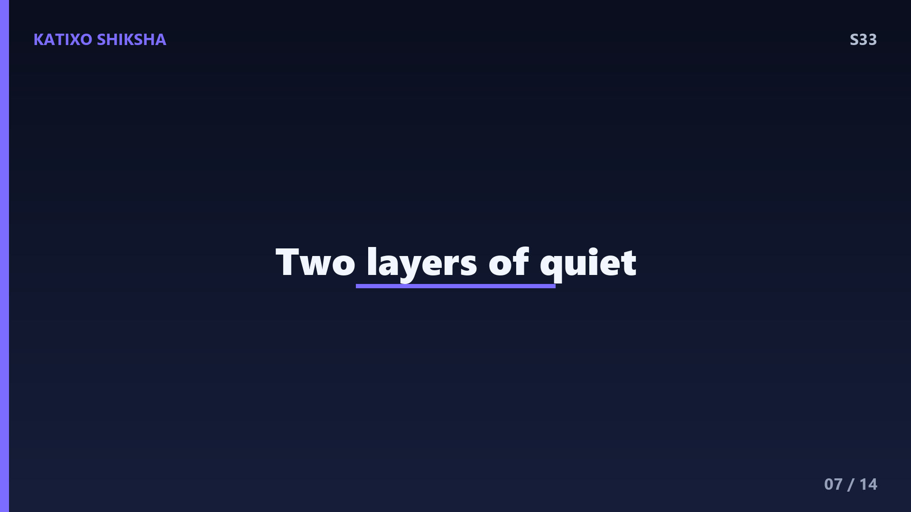
Slide 7यहाँ एक confusion दूर कर दें। दो अलग चीज़ें होती हैं — passive और active noise cancellation. Passive का मतलब है बस physical रुकावट — headphone के मोटे cushion और tight fit जो शोर को कान तक पहुँचने से ही रोक देते हैं, ठीक वैसे जैसे कान में रुई। और active यानी ANC वो smart electronic तरीका है, anti-noise वाला। सबसे अच्छे headphones दोनों को मिलाकर इस्तेमाल करते हैं — पहले cushion शोर को कम करता है, फिर ANC बचे-खुचे शोर को electronically मिटा देता है। double protection!
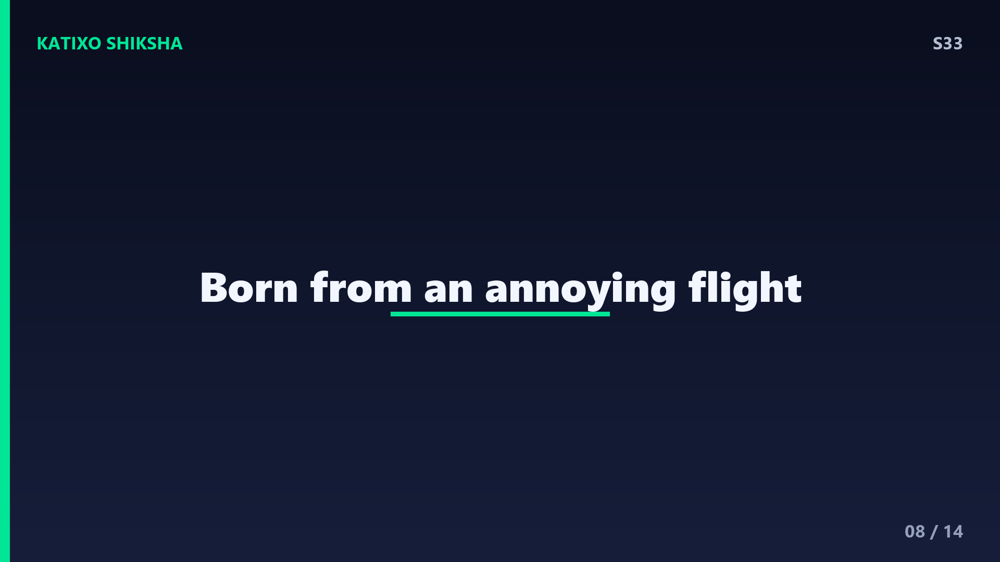
Slide 8एक मज़ेदार सवाल — ये technology आई कहाँ से? इसका idea दिया था एक American inventor और engineer Amar Bose ने, सन 1978 के आसपास, जब वो एक plane में सफ़र कर रहे थे और engine का शोर उन्हें बहुत परेशान कर रहा था। उन्होंने सोचा — क्यों न आवाज़ से ही आवाज़ को रोका जाए? और इसी सोच से बना दुनिया का पहला noise-cancelling headphone, जो शुरू में pilots के लिए बनाया गया था। तो अगली बार headphone पहनो, तो याद रखना — ये एक plane की झुंझलाहट से जन्मा idea है!
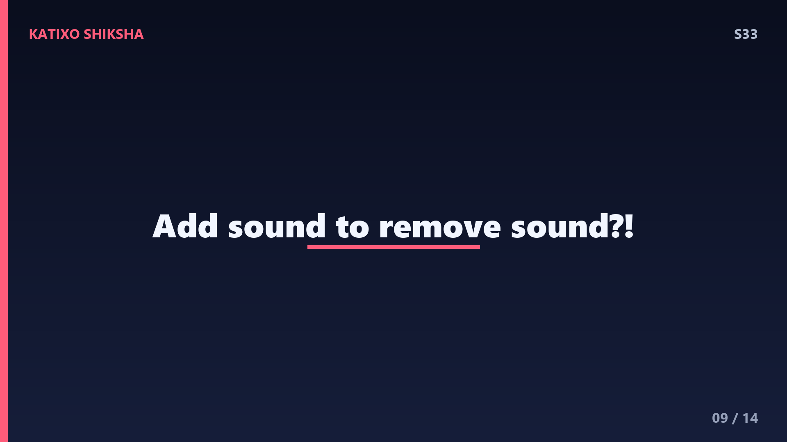
Slide 9अब एक common गलतफ़हमी। बहुत लोग सोचते हैं ANC आवाज़ को सोख लेता है या block कर देता है — ऐसा नहीं है। ANC आवाज़ को रोकता नहीं, बल्कि उसके बराबर एक उल्टी आवाज़ बनाकर उसे neutralize करता है। यानी headphone असल में शोर के ऊपर और आवाज़ डालता है, ताकि दोनों मिलकर शून्य हो जाएँ! थोड़ा अजीब लगता है ना — आवाज़ बंद करने के लिए और आवाज़ पैदा करना? पर यही तो physics की खूबसूरती है, दोस्तों — कभी-कभी उल्टा करके सीधा नतीजा मिलता है।
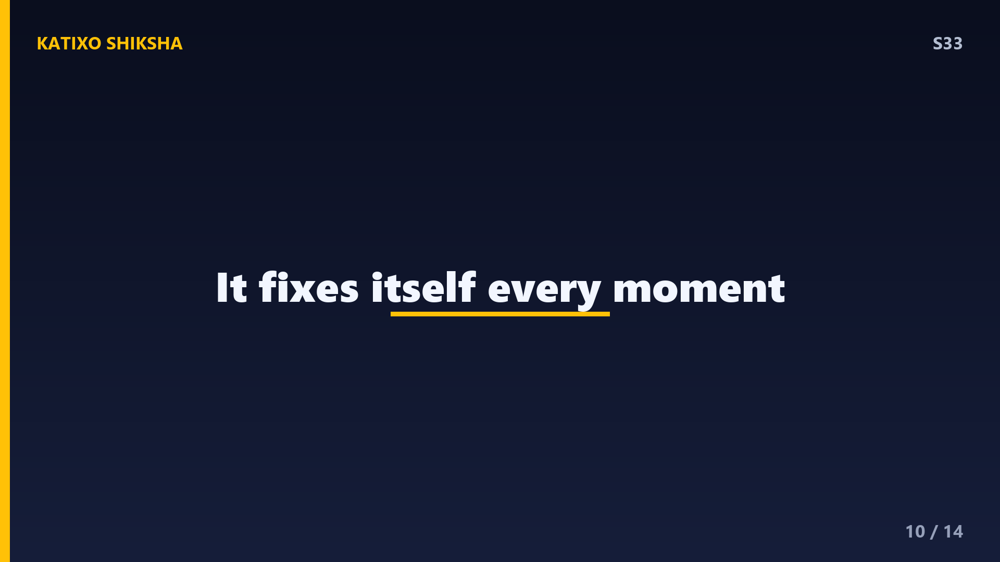
Slide 10थोड़ी और technology। आज के best headphones में कई microphones होते हैं — कुछ बाहर की तरफ़, कुछ अंदर कान के पास। बाहर वाले शोर को पहले से पकड़ लेते हैं, और अंदर वाले check करते हैं कि कान तक कितना शोर बचा रह गया, फिर processor और adjust कर देता है — इसे कहते हैं feedback system. यानी headphone लगातार अपना काम सुधारता रहता है, हर पल। और ये सब एक छोटी सी battery से चलता है, इसीलिए ANC headphones को charge करना पड़ता है — passive वाले को नहीं।
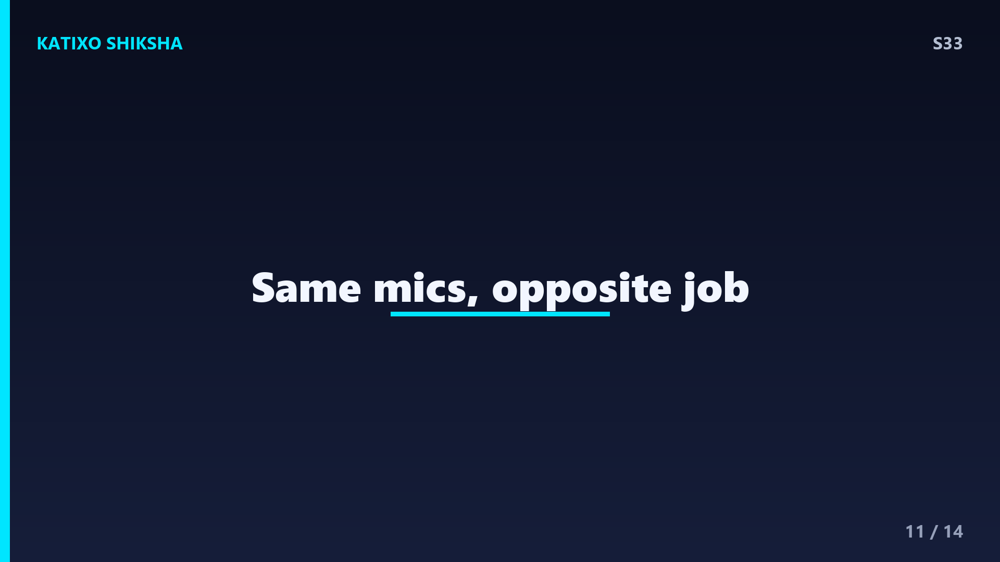
Slide 11एक आख़िरी cool बात — कई headphones में एक transparency mode भी होता है, जो ANC का बिल्कुल उल्टा है। इसमें headphone बाहर का शोर cancel करने की बजाय microphones से बाहर की आवाज़ें पकड़कर तुम्हारे कान में पहुँचाता है, ताकि headphone पहने-पहने भी तुम किसी की बात सुन सको या road पर traffic को notice कर सको। यानी वही microphones, बस अलग तरीके से इस्तेमाल। एक ही technology, दो उल्टे काम — चालू और सुरक्षित दोनों। टेक्नोलॉजी कमाल की चीज़ है!
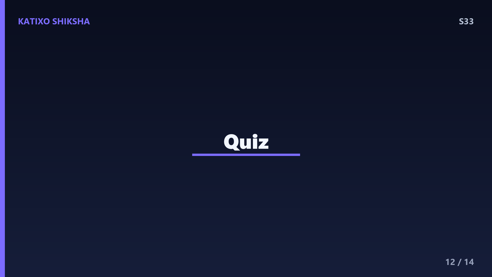
Slide 12Quick brain check! Video pause करो और तीनों सवालों के जवाब सोचो। पहला — जब एक wave की चोटी दूसरी wave की घाटी पर मिलकर आवाज़ को खत्म कर देती है, उस नियम का नाम क्या है? दूसरा — ANC किस तरह के शोर पर सबसे अच्छा काम करता है, धीमी लगातार आवाज़ या अचानक तेज़ आवाज़? और तीसरा — headphone के अंदर वो छोटा जासूस जो शोर को पकड़ता है, उसे क्या कहते हैं? सोचो ज़रा... Ready? चलो answers!
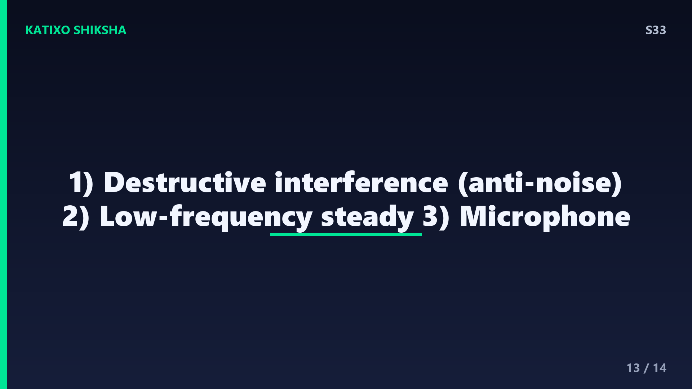
Slide 13जवाब! पहला — जब एक wave की चोटी दूसरी की घाटी से मिलकर आवाज़ खत्म करे, उस नियम का नाम है destructive interference, और उल्टी wave को anti-noise कहते हैं। दूसरा — ANC सबसे अच्छा काम करता है low-frequency यानी धीमी, लगातार आवाज़ों पर, जैसे plane के engine की गूँज। और तीसरा — शोर पकड़ने वाला छोटा जासूस है microphone, जो signal processor को भेजता है। तीनों सही? वाह, तुम तो sound के master बन गए!
Slide 14तो आज हमने सीखा — आवाज़ एक wave है, और destructive interference से एक उल्टी anti-noise wave बनाकर शोर को cancel किया जाता है। microphone शोर पकड़ता है, processor उल्टी wave बनाता है, और बस — खामोशी! इसी को कहते हैं ANC. अगले episode में एक दिमाग घुमा देने वाला सवाल — हमें deja vu यानी ये एहसास क्यों होता है कि ये पल पहले भी हो चुका है? रहस्यमय होने वाला है! Subscribe करना मत भूलना दोस्तों! Bye!